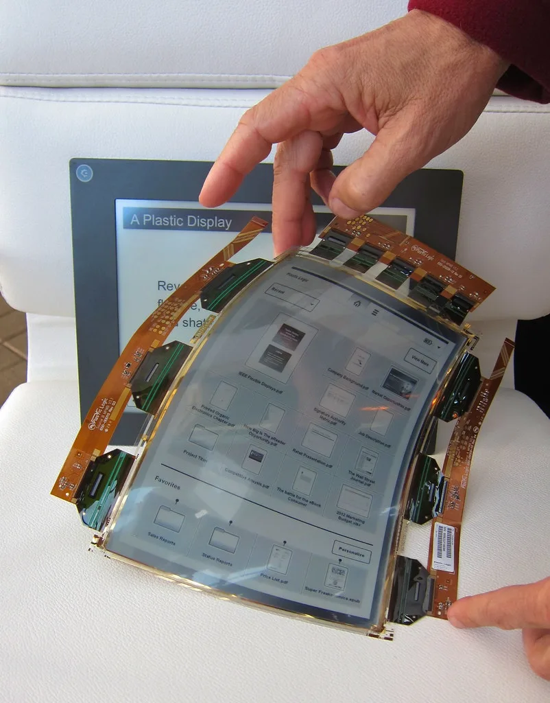
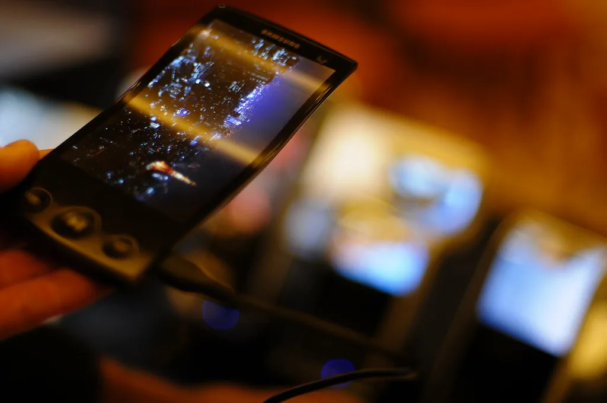

"필름 벗기니 주름"…아이폰 듀오, 디스플레이 논란에 수리비도 '초고가'
애플의 첫 폴더블폰 '아이폰 듀오'가 지난 23일 국내 매장에서 정식 출시됐지만, 출시 직후부터 디스플레이를 둘러싼 논란에 휩싸였다. 제품에 기본 부착된 보호 필름을 떼어내자 내부 디스플레이의 접히는 부분에 뚜렷한 굴곡이 드러난다는 지적이 잇따르면서, 애플이 보호 필름으로 화면 주름을 가려 왔던 것 아니냐는 의혹이 제기된 것이다. 보호 필름이 붙어 있는 상태에서는 주름이 잘 눈에 띄지 않았던 탓에 사용자들의 체감 충격이 더 컸다는 반응도 나온다.
애플은 폴더블폰의 숙제로 꼽히는 화면 주름 문제를 줄이기 위해 내부 디스플레이에 '나노 텍스처' 기술을 적용했다. 화면 표면의 빛 반사를 억제해 접히는 부분의 굴곡이 시각적으로 덜 두드러지도록 설계한 것이 특징이다. 다만 해외 IT 매체들은 나노 텍스처가 눈부심을 줄이고 주름을 가리는 데는 효과적이지만, 일반 유광 디스플레이보다 색감이 흐릿하고 선명도가 떨어진다는 평가를 내놓고 있다. 기술적 트레이드오프가 분명한 선택이었다는 것이다.

내구성 논란도 이어지고 있다. 독일 IT 매체 노트북체크가 인용한 HTX 스튜디오의 반복 접힘 시험 결과에 따르면, 아이폰 듀오의 화면 주름 깊이는 최초 48마이크로미터(㎛)에서 3000회 반복 접기를 거친 뒤 167㎛로 늘어났다. 약 3.5배 깊어진 수치로, 사용 기간이 길어질수록 주름이 눈에 더 잘 띄게 될 수 있다는 우려를 뒷받침하는 결과다. 전자신문 등 일부 매체는 초기 사용 리뷰에서 멀티태스킹 편의성과 내구성 모두에서 혹평이 나왔다고 전하기도 했다.
수리비 부담도 소비자들의 불만을 키우는 요인이다. 아이폰 듀오의 내부 디스플레이 수리비는 164만9000원으로, 외부 디스플레이까지 함께 손상됐을 경우에는 액정 수리에만 약 220만8000원이 든다. 평면형인 아이폰18 프로의 화면 손상 수리비가 49만9000원인 점을 감안하면, 폴더블폰인 아이폰 듀오의 수리비는 최대 4배 이상 높은 셈이다. 다만 내부 화면의 얇고 휘어지는 커버 레이어만 손상된 경우라면 전체 디스플레이 교체 없이 7만9000원으로 비교적 저렴하게 수리할 수 있는 길도 마련돼 있다.

아이폰 듀오는 256GB 모델이 329만원부터 시작하며, 최고 사양인 2TB 모델은 509만원에 달하는 고가 제품이다. 가격 부담이 큰 만큼 소비자들은 디스플레이 내구성과 수리비에도 민감하게 반응하고 있다. 업계에서는 애플이 처음 내놓은 폴더블폰이라는 상징성과 별개로, 실사용 과정에서 드러난 디스플레이 품질 논란이 판매량에 어떤 영향을 미칠지 주시하고 있다.
경쟁사인 삼성전자의 갤럭시Z폴드 시리즈도 과거 출시 초기 내구성 논란을 겪은 바 있어, 폴더블폰 시장 전반에서 디스플레이 내구성은 여전히 해결되지 않은 숙제로 남아 있다는 평가가 나온다. 애플이 이번 논란에 대해 공식적인 입장을 추가로 내놓을지, 향후 소프트웨어 업데이트나 보증 정책 조정으로 대응할지도 관심사다. 보호 필름 부착 여부에 따라 체감 품질이 크게 달라진다는 지적이 나오는 만큼, 구매를 고민하는 소비자라면 매장에서 필름을 제거한 실제 화면 상태를 직접 확인해 보는 것이 좋다는 조언도 뒤따른다.